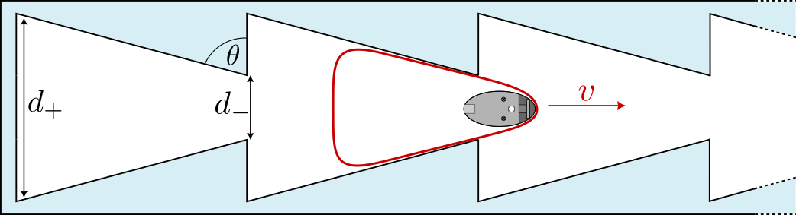

Synthetic analogues of motile cells and tissues
Filip Novkoski, GRASP, University of Liège
Nicolas Vandewalle, GRASP, University of Liège
Agents consuming energy and transforming it into motion or forces - an out of equilibrium system
Through interactions between agents, collective motion can emerge
Synthetic systems have become a current tool in the experimental study of active matter
Vibrated polar granular matter
A variety of colloid swimmers
Two issues to tackle
Experimental control over agent properties
Moving away from hard to soft matter
Introducing the GRASPion
- A programmable vibrobot - executes user defined motion
- Arduino based and easy to use - open source
- Fully 3D printed
- Low cost - 120€ per unit
- Communication - IR and Bluetooth (under development)
M. Noirhomme et al. Brainbots as smart autonomous active particles with programmable motion Phys. Rev. App. 23, 064008 (2025).
We can program a diffusive motion into the bot:
Go straight for $t\in[200,1200]$ ms →
Pick left or right randomly →
Turn for $t\in[200,1200]$
The tracked trajectory of the bot
Measured mean squared displacement
We enclose the bot within a paper ring
The bot and ring form a soft active particle
We track the bot (diffusive) and paper membrane COM and shape
The experimental synthetic cell setup
Work of Fanny Wéry, PhD student
We focus first on the evolution MSDs of the bot and cell with cell size
The bot remains diffusive over same timescale while the membrane becomes ballistic over a longer time for higher $R$
- We fit the cell's MSD in ballistic and diffusive regimes
- We measure the ballistic velocity $v_0$ and diffusion coefficient $D$
- Cell diffusivity drops with increase in size
- Choice of cell size - control over diffusion properties
The cell moves only when the bot pushes it - we define a cell resting time (no displacement)
The bot takes a longer time for larger $R$ to travel and hit the membrane
Knowing basic cell dynamics we can now build on this
Can we reproduce rectification of cell motion on a macroscopic scale?
We construct a simple ratchet to hold the cell
How do cell properties affect ratcheting? - Sorting?

Work of Jocelyn Dupont, M2 Student
What is the effect of cell size and paper thickness?
The probability to go right is higher than to go left
The base bot motion - source of probability asymmetry - compounds with membrane shape
Cell thickness increases probability - a route to sorting?
- A non-zero average velocity of the cell is measured for all sizes
- Crossover at a critical radius $R=5.5$ cm
- Effect of ratchet geometry independent of cell thickness
- Thinner cells move faster - less friction with compartement walls
- Packing high number of cells into a confined space
- Cell interaction increases with packing fraction $\phi$ - deformation
- What is the influence of cell rigidity - jamming?
- Reproducing behavior of biological tissues - T1 transitions?
Normalized velocity of active cells
- Thick paper cells - $180$ g
- Cell motility reduces with packing fraction $\phi$
- A transition from a liquid to a solid regime is observed
- Critical packing fraction $\phi_c=0.8$ - jamming of disks
- No transition back to a liquid at high packing fractions
Normalized velocity of active cells
- Thin paper cells - $130$ g
- Once again cell motility reduces with $\phi$
- Transition to solid at $\phi_c=0.8$
- A transition back to liquid at $\phi=1$
- Cell motility increase due to high cell deformation
- The GRASPion - a new programmable tool for study of active matter
- Construction of synthetic cells - control over statistical properties
- Demonstration of motion rectification of such cells on macroscopic cells
- Construction of tissues - packing of large cell number in confined space
- Experimental demonstration of jamming transition and transition to liquid at high packing
Thank you for your attention